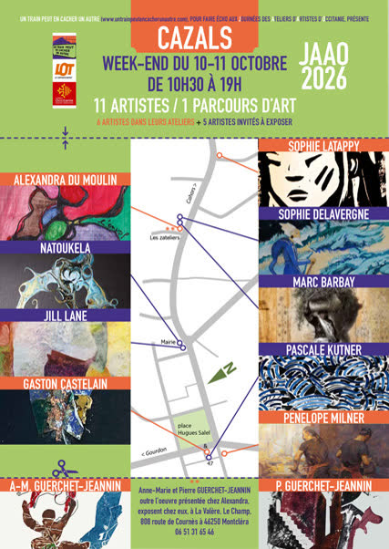

Journées des Ateliers d’Artistes d’Occitanie
Onze artistes, un parcours d’art dans Cazals. Les artistes qui souhaitent participer dans le cadre de l’association se rapprochent d’Alexandra sans tarder, et/ou s’inscrivent directement auprès de la Région avant le 7 septembre.